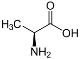

A Computational Framework for Multiscale Modelling

University of Oslo
What is multiscale modelling?
Modelling schemes where physical systems are considered at different length and time scales.Used to handle systems where physical processes on different orders of magnitude (spatially and temporally) are intertwined and must be simultaneously considered in order to gain scientific insight.

Alanine, C3H7NO2
~50 electrons
~50 electrons

Amino acid residue
~500 electrons
~500 electrons

Myoglobin protein
>10 000 electrons
>10 000 electrons
The world is quantum mechanical
At the most fundamental level, everything adheres to the laws of quantum mechanics,\begin{align} \hat H |\Psi(t)\rangle = \mathrm{i}\hbar \frac{\partial}{\partial t}|\Psi(t)\rangle. \end{align}
We can in principle find the dynamics of any physical system by solving the Schrödinger equation for the relevant Hamiltonian.
Coarse graining and effective potentials
As direct—ab initio—solution of the Schödinger equation is unfeasible for large scale systems, approximations are needed in order to make progress.Coarse graining entails collecting constituent parts of the system into larger entities for which the dynamics are integrated as if these larger particles interact via some approximate effective potential. This freezes out the internal degrees of freedom of the larger particles.
If we can find a reasonable parametrization of the inter-atomic potential $V(r)$, $r\equiv|{\bf r}_1-{\bf r}_2|$, we may integrate the atomic motion classically in terms of Newton's laws,
\begin{align} \frac{\partial {\bf p}}{\partial t} = {\bf F}, \end{align}
with
\begin{align} {\bf F}=-\nabla V(r). \end{align}
Traditional effective inter-atomic potentials
Traditionally, the potentials and associated force fields (FF) are constructed as functional forms inspired by physical and chemical intuition. Some parameters are traditionally included and tuned in order to reproduce (e.g.) some thermodynamic variable when the FF is employed in molecular dynamics calculations.In general, such potentials can be written as a sum of one-body, two-body, three-body, and higher order terms,
\begin{align} V({\bf R}) = \sum_{i=1}^N V_1({\bf r}_i) + \sum_{i=1}^N\sum_{j=i+1}^N V_2({\bf r}_i,{\bf r}_j) + \sum_{i < j < k}^N V_3({\bf r}_i,{\bf r}_j,{\bf r}_k) \dots , \ \ \text{ with } {\bf R}=\{{\bf r}_1, {\bf r}_2,\dots,{\bf r}_N\}. \end{align}
As the number of unique combinations of $i$, $j$, $k$, $l$, etc. which need to be taken into account for calculating an $n$-body term grows as
\begin{align} \text{combinations}(n) = {N \choose n}, \end{align}
this expansion needs to be truncated.
A machine learning approach
Traditional potential fitting by hand relies heavily on the physical intuitions and imagination of the experimenter performing the parametrization. This is inherently problematic. An ideal approach is one which is completely independent of the human experimenter.Machine learning and narrow artificial intelligence (AI) offers an attractive alternative approach. Instead of a pre-determined functional form, artificial neural networks (ANN) can approximate any functional form without any human interference, given nothing but a sizeable collection of training examples.
This is a trivial case, but serves to illustrate the point: a priori knowledge about the physical system at hand is needed. This is a problem if we wish to explore a completely unknown physical system.
All that is needed—on the other hand—for the machine learning approach is a way to compute energies for given atomic configurations which can be served to an ANN as training examples.
Ab initio quantum mechanics and the Born-Oppenheimer approximation
For relatively small physical systems consisting of relatively few particles, we may solve the Schrödinger equation from first principles—ab initio—under certain sets of approximations. The most common approximation is the Born-Oppenheimer approximation BOA.Under the BOA, the electronic and the nucleuonic degrees of freedom are separated essentially freezing the heavier nuclei in place. Because the protons are almost 2 000 times heavier than the electrons, little momentum transfer will occur between them. We may thus solve the electronic Schrödinger equation which depends only parametrically on the positions of the nuclei.
\begin{align} \hat H = -\sum_{i=1}^N \frac{\nabla^2_i}{2}-\sum_{A=1}^M \frac{\nabla^2_A}{2M_A} - \sum_{i=1}^N\sum_{A=1}^M \frac{Z_A}{|{\bf r}_i-{\bf r}_A|} + \sum_{i=1}^N\sum_{j=i+1}^N \frac{1}{|{\bf r}_i-{\bf r}_j|} + \sum_{A=1}^M\sum_{B=A+1}^M \frac{Z_ZA_B}{|{\bf r}_A-{\bf r}_B|} \end{align}
\begin{align} \hat H_e = -\sum_{i=1}^N \frac{\nabla^2_i}{2}- \sum_{i=1}^N\sum_{A=1}^M \frac{Z_A}{|{\bf r}_i-{\bf r}_A|} + \sum_{i=1}^N\sum_{j=i+1}^N \frac{1}{|{\bf r}_i-{\bf r}_j|} + \underbrace{\sum_{A=1}^M\sum_{B=A+1}^M \frac{Z_ZA_B}{|{\bf r}_A-{\bf r}_B|}}_{\text{constant}} \end{align}
After finding the electronic energy and the eigenstates, we may go back and solve the nucleonic equation
\begin{align} \hat H_n = \left\langle\underbrace{-\sum_{i=1}^N \frac{\nabla^2_i}{2}- \sum_{i=1}^N\sum_{A=1}^M \frac{Z_A}{|{\bf r}_i-{\bf r}_A|} + \sum_{i=1}^N\sum_{j=i+1}^N \frac{1}{|{\bf r}_i-{\bf r}_j|}}_{E_e}\right\rangle -\sum_{A=1}^M \frac{\nabla^2_A}{2M_A} + \sum_{A=1}^M\sum_{B=A+1}^M \frac{Z_ZA_B}{|{\bf r}_A-{\bf r}_B|}, \end{align}
where we average over the electronic Hamiltonian.
\begin{align} \hat H_n = -\sum_{A=1}^M \frac{\nabla^2_A}{2M_A} + E_e({\bf r}_A,{\bf r}_B,\dots,{\bf r}_C) \end{align}
the electron energy $E({\bf r}_A,{\bf r}_b,\dots,{\bf r}_C)$ acts as a potential for the nuclear motion, meaning the nuclei move on a potential energy surface determined by solving the electronic problem.
Particle indistinguishability and Slater determinants
Fermionic quantum states must be anti-symmetric w.r.t. interchange of any two particles as per the Pauli principle. Because electrons are fundamentally indistinguishable, the wave function must be non-committal as to which particle is occupying which single-particle state $\phi_i({\bf x})$.A convenient representation which achieves both counts is the Slater determinant
\begin{align} D = \Psi({\bf R}) = \left| \begin{matrix} \phi_1({\bf x}_1) & \phi_2({\bf x}_1) & \dots & \phi_N({\bf x}_1) \\ \phi_1({\bf x}_2) & \phi_2({\bf x}_2) & \dots & \phi_N({\bf x}_2) \\ \vdots & \vdots & \ddots & \vdots \\ \phi_1({\bf x}_N) & \phi_2({\bf x}_N) & \dots & \phi_N({\bf x}_N) \end{matrix} \right| \end{align}
Energy of the Slater determinant
The atomic Hamiltonian consists of a one-body and a two-body term, $\hat H=\hat H_0 + \hat W$, with\begin{align} \hat H_0 = \sum_{i=1}^N \hat h_i = \sum_{i=1}^N\left[ -\frac{\nabla_i^2}{2} - \sum_{A=1}^M \frac{Z_A}{|{\bf r}_i-{\bf r}_A|} \right] \end{align}
and
\begin{align} \hat W = \sum_{i=1}^N\sum_{j=i+1}^N \hat w_{ij} = \sum_{i=1}^N\sum_{j=i+1}^N \frac{1}{|{\bf r}_i-{\bf r}_j|}. \end{align}
The energy is
\begin{align} \langle \Psi({\bf R})|\hat H|\Psi({\bf R})\rangle \equiv E= \sum_{i=1}^N\langle \phi_i|\hat h|\phi_i\rangle + \sum_{i=1}^N\sum_{j=i+1}^N \Big[\langle \phi_i\phi_j|\hat w|\phi_i\phi_j\rangle - \langle \phi_i\phi_j|\hat w|\phi_j\phi_i\rangle \Big] \end{align}
\begin{align} \langle \phi_i|\hat h|\phi_j\rangle \equiv \int\mathrm{d}{\bf x}\, \phi_i({\bf x})^* \left[-\frac{\nabla^2}{2}-\sum_{A=1}^M\frac{Z_A}{|{\bf r}-{\bf r}_A|} \right]\phi_j({\bf x}) \end{align}
and
\begin{align} \langle \phi_i\phi_j|\hat w|\phi_k\phi_l\rangle \equiv \int\mathrm{d}{\bf x}_1\int\mathrm{d}{\bf x}_2\, \phi_i({\bf x}_1)^* \phi_j({\bf x}_2)^* \left[\frac{1}{|{\bf r}_1-{\bf r}_2|}\right]\phi_k({\bf x}_1) \phi_l({\bf x}_2) \end{align}
Minimizing the Slater determinantal energy and the Hatree-Fock equations
The single-particle orbitals $\phi_i({\bf x})$ are still unknown. We can find the basis set $\{\phi_i({\bf x})\}_{i=1}^N$ which minimizes the energy by considering the energy expectation value as a functional of the oribitals,\begin{align} \langle \Psi({\bf R})|\hat H|\Psi({\bf R})\rangle = E = E[\phi_1,\phi_2,\dots,\phi_N]. \end{align}
In order to minimize this functional we demand that the functional derivative of $E$ w.r.t. the orbital $\phi_i$ vanishes. The constraint that all the orbitals be orthonormal is enforced by use of Lagrangian multipliers.
This leads to the Hartree-Fock equations
\begin{align} \underbrace{\hat f}_{\text{Fock operator}} \phi({\bf x}) = \hat h\phi({\bf x}) + \sum_{k=1}^N\Bigg[\underbrace{\int\mathrm{d}{\bf x}'\, \phi_k^*({\bf x}')\hat w \phi({\bf x})\phi_k({\bf x}')}_{\hat J_k} - \underbrace{\int\mathrm{d}{\bf x}'\, \phi_k({\bf x}')^* \hat w \phi({\bf x}')\phi_k({\bf x})}_{\hat K_k}\Bigg] = \varepsilon \phi({\bf x}) \end{align}
The Hatree-Fock equations expanded in a known basis
In order to make progress, we expand the unknown HF orbitals in a known basis $\{\varphi_k\}_{k=1}^L$,\begin{align} \phi_i({\bf x}) \approx \sum_{k=1}^LC_{ki}\varphi_k({\bf x}). \end{align}
Employing the Galerkin method, we left-multiply the HF equations by $\varphi_q({\bf x})$ and integrate, giving the weak form of the HF equations
\begin{align} \sum_{k=1}^LC_{ki}\int\mathrm{d}{\bf x}\, \varphi_q({\bf x})\hat f \varphi_k({\bf x}) = \varepsilon_i \sum_{k=1}^LC_{ki} \int\mathrm{d}{\bf x}\varphi_q({\bf x})\varphi_k({\bf x}). \end{align}
In matrix form:
\begin{align} FC = \varepsilon SC. \end{align}
Example Hartree-Fock calculations
Electron density
CH4
CH4
Dissociation energy
H2+
H2+
Examples of HF benchmark tests
All energies calculated for these test molecules are within $0.02\%$ of the HF limit, except for the hydrogen molecule ($0.13\%$).Hartree-Fock as a mean-field theory and electron correlations
Under the single Slater determinant wave function ansatz, same-spin correlation is included (exchange correlation) making sure that the electron density $\rho({\bf r}_1,{\bf r}_2)\rightarrow 0$ as ${\bf r}_1\rightarrow {\bf r}_2$ for electrons with the same spin projection $\sigma$.However, each electron interacts only with the average charge density of the rest of the electrons combined meaning HF is in a sense a mean-field theory. We are missing dynamic (instantenous) correlations.
We cannot achieve dynamic correlations between electrons with only a single Slater determinant. We must either use a linear combination of (nearly degenerate) Slater determinants, or include other correlation terms in the wave function.
The Jastrow factor
The Jastrow factor is an explicit parametrization of the instantaneous repulsion felt by electrons moving in a field of other electrons. We use a simple form, but it can in general be (much) more complicated\begin{align} J({\bf R}) = \exp\left[\sum_{i=1}^N\sum_{j=i+1}^N \frac{a_{ij}r_{ij}}{1+\beta r_{ij}}\right], \ \ \ \text{ with } \ r_{ij}\equiv |{\bf r}_i-{\bf r}_j|. \end{align}
The $a_{ij}$ is a spin-dependent constant, while $\beta>0$ is a tuneable parameter.
The Slater-Jastrow ansatz,
\begin{align} \Phi({\bf R})=D({\bf R})J({\bf R}) = \left| \begin{matrix} \phi_1({\bf x}_1) & \phi_2({\bf x}_1) & \dots & \phi_N({\bf x}_1) \\ \phi_1({\bf x}_2) & \phi_2({\bf x}_2) & \dots & \phi_N({\bf x}_2) \\ \vdots & \vdots & \ddots & \vdots \\ \phi_1({\bf x}_N) & \phi_2({\bf x}_N) & \dots & \phi_N({\bf x}_N) \end{matrix} \right| \exp\left[\sum_{i=1}^N\sum_{j=i+1}^N \frac{a_{ij}r_{ij}}{1+\beta r_{ij}}\right] \end{align}
taking correlation effects explicitly into account is (hopefully) a more accurate representation of the true ground state wave function.
Effect of the Jastrow factor on the wave function
as ${\bf r}_1$ approaces ${\bf r}_2$ held in place at ${\bf r}_2=(1,1,0)$
as ${\bf r}_1$ approaces ${\bf r}_2$ held in place at ${\bf r}_2=(1,1,0)$
Post Hartree-Fock methods: Quantum monte carlo
While Hartree-Fock has traditionally been the starting point (and sometimes also the end point) for electronic structure calculations, more accurate post Hartree-Fock methods are often needed in order to achieve the desired accuracy.An example of a conceptually simple method is the Variational Monte Carlo (VMC) scheme. Under VMC, we formulate any quantity we are interested in (usually the ground state energy) in terms of an integral which we directly solve by Monte Carlo methods.
\begin{align} E_0=\langle \Psi|\hat H|\Psi\rangle = \frac{\int\mathrm{d}^{3N}{\bf R}\, \Psi^*({\bf R})\hat H({\bf R}) \Psi({\bf R})}{\int\mathrm{d}^{3N}{\bf R}\, \Psi^*({\bf R})\Psi({\bf R})} \end{align}
Monte Carlo integration
Monte Carlo integration essentially evaluates approximations to an integral by picking function arguments at random and summing the resulting function values,\begin{align} I\equiv \int_a^b \mathrm{d}x\, f(x) \approx \frac{b-a}{N}\sum_{i=1}^Nf(X_i) \ \ \ (\{X_i\}_{i=1}^N \text{ independent, uniform random samples on } [a,b]). \end{align}
The distribution need not in general be uniform,
\begin{align} I=\int_a^b\mathrm{d}x\, f(x) \approx \frac{1}{N}\sum_{i=1}^N \frac{f(X_i)}{P(X_i)} \ \ \ (\{X_i\}_{i=1}^N \text{ independent samples distributed according to }P(x)\text{ on } [a,b]). \end{align}
Using a distribution "close" to (parts of) the integrand is desirable.
The local energy
The ground state energy is an integral over all electronic coordinates, and as such cannot depend on the positions of the electrons. However, it is useful to introduce a measure of the energy which has such spatial dependence.The local energy $E_\text{L}$ is defined as
\begin{align} E_\text{L}({\bf R}) = \frac{\hat H \Psi({\bf R})}{\Psi({\bf R})}=\frac{1}{\Psi({\bf R})}\sum_{i=1}^N\left[ -\frac{\nabla_i^2}{2}-\sum_{A=1}^M \frac{Z_A}{|{\bf r}_i-{\bf r}_A|} + \sum_{j=i+1}^N \frac{1}{|{\bf r}_i-{\bf r}_j|}\right]\Psi({\bf R}) \end{align}
For the true wave function, $\hat H \Psi({\bf R}) = E\Psi({\bf R})$ meaning the local energy becomes a constant.
The Variational Monte Carlo integral can be written in terms of the local energy as
\begin{align} E_\text{VMC} = \frac{\displaystyle \int\mathrm{d}{\bf R}\,\Psi^*({\bf R})\Psi({\bf R})\frac{\hat H\Psi({\bf R})}{\Psi({\bf R})}}{\displaystyle \int\mathrm{d}{\bf R}\, |\Psi({\bf R})|^2} = \int\mathrm{d}{\bf R}\, \rho({\bf R})E_\text{L}({\bf R}). \end{align}
Sampling the electron density: The Metropolis algorithm
When performing the Monte Carlo integration, we may use the electron density $\rho({\bf R}) = |\Psi({\bf R})|^2\Big/\int\mathrm{d}{\bf R}\, |\Psi({\bf R})|^2$ as the random sample distribution $P$, giving\begin{align} E_\text{VMC} = \int\mathrm{d}{\bf R}\, \rho({\bf R})E_\text{L}({\bf R}) \approx \frac{1}{N_\text{MC}}\sum_{i=1}^{N_\text{MC}}E_\text{L}({\bf R}_i), \end{align}
with ${\bf R}_i$ coordinate sets distributed according to $\rho({\bf R})$.
The $\rho({\bf R})$ distribution is complicated and it is (most likely) impossible to draw samples directly by e.g. inversion sampling. We use instead the Metropolis algorithm, which only requires us to be able to compute efficiently a quantity proportional to the distribution $\rho$. Since we can easily evaluate $|\Psi({\bf R})|^2$ given coordinates ${\bf R}$, this is no problem.
The Metropolis algorithm generates a Markov Chain of samples asymptotically distributed according to $P$.
Wave function ansatz and parameter optimization
In order to employ the VMC machinery, we need to choose a form of the wave function guess. We use the aforementioned Slater-Jastrow form, $\Psi_\text{Trial}=\Psi_\text{T}=D({\bf R})J({\bf R})$.VMC is a variational method so the answer we get is an upper bound to the true ground state energy. We do not—a priori—know the optimal value of the paramters $\beta$ (and possibly other parameters) which minimize the $E_\text{VMC}$.
We can optimize the $\beta$ parameter by computing $\frac{\partial \langle E_\text{VMC}(\beta)\rangle}{\partial \beta}$ and updating $\beta$ after each iteration according to a steepest descent algorithm.
Examples of VMC benchmark tests
The $\alpha$ parameter is a parameter inserted in the single particle orbitals in the Slater determinant (effective, shielded nucleus charge), while $\beta$ determines the strenght of the dynamic correlation effects.Machine learning and artificial neural networks
Now that we have a way of generating ab initio quantum mechanical energy data we return to the true subject of the thesis: using machine learning algorithms to parameterize general effective potentials for use in molecular dyanmics simulations.Essentially, I want to teach my laptop how to do quantum mechanics.
The training strategy is that of supervised learning, where the algorithm is presented with (preferably many) examples of input/output $x/y$ pairs, which it attempts to match.
Feed forward artificial neural networks
The scheme we use is that of the feed forward ANN. The network is simply a complicated functional form, $\text{ANN}:\mathbb{R}^p\rightarrow \mathbb{R}^q$. We can visualize it as a series of layers of artificial neurons, which the initial signal is propagated through. We denote the output of the network by $y'$ (in general a vector).Artificial neurons
Artificial neurons—the constituent parts of the ANN—are inspired by biological neurons. Each neuron recieves input from the neurons in the previous layers, to which it may be strongly or weakly connected. The input is multiplied by a weight, meaning strong connections between subsequent neurons are represented by large values of $w_{i}$.Each neuron has an associated bias $b$, which serves to adjust the saturation of the output regardless of the input.
Activation functions
All the neuron inputs are multiplied by the weighs and summed, and the bias is added. Subsequently, an activation function is applied. Many different functional forms are used by different researchers for different purposes. The example shown here is a sigmoid function\begin{align} f(x) = \frac{1}{1+\mathrm{e}^{-x}}. \end{align}
Artificial neural networks are universal approximators
Given any continous function $g(x)$ defined on a closed interval of $\mathbb{R}$ and any $\varepsilon>0$, there exists a finite $N$ and vectors ${\bf v}, {\bf b}, {\bf w}\in \mathbb{R}^N$ such that\begin{align} |F(x)-f(x)|<\varepsilon, \end{align}
with
\begin{align} G(x)=\sum_{i=1}^N v_i \xi(w_i x + b_i), \ \ \ \text{ where }\xi \text{ is the activation function.} \end{align}
This is known as the universal approximation theorem, and it says that a single hidden layer is enough to make an ANN capable of approximating any continous real-valued function to arbitrary precision.
The cost function and backpropagation
The universal approximation theorem says nothing—however—about how to construct the network in question.In order to make progress, we define a measure of how successful the ANN currently is at replicating the $x/y$ training data points. For each input/output pair, we take the squared difference between the desired output $y$ and the actual network output $y'$. Summing over all the training inputs, and taking the square root yields the cost function $C(y')$,
\begin{align} C(y') = \Vert {\bf y}-{\bf y}'\Vert_2 = \sqrt{\sum_{i=1}^N (y_i-y_i')^2}. \end{align}
Taking the derivative of the cost function w.r.t. all the weights and biases gives us a way to update the parameters of the ANN in order to improve it's performance. The procedure normally used to perform this differentiation is called backpropagation.
ANN training sequence example
Multivariable ANN training example
Training an ANN to approximate a part of the three-body potential of the Stillinger-Weber potential for Si.Training on noisy data and overfitting
Molecular dynamics
Classical dynamics by Newton's laws for atoms and molecules, using a given force field (FF) derived from some potential $V({\bf R})$.We use the ANN as a potential, using backpropagation to differentiate $V({\bf R})$ in order to obtain ${\bf F}=-\nabla V({\bf R})$.
Naively scales as $\mathcal{O}(N^2)$ with system size $N$, but can be made linear with ingenious partitioning schemes.
Testing the ANN potentials in MD
We train an ANN to approximate the simple Lennard-Jones (LJ) potential, and verify that subsequent MD simulations recover the dynamics of MD runs using LJ directly. Snapshot from the MD simulation of the
LJ liquid using the ANN potential
LJ liquid using the ANN potential
Computed pair correlation function $g(r)$
for the original LJ potential and the
approximating ANN
for the original LJ potential and the
approximating ANN